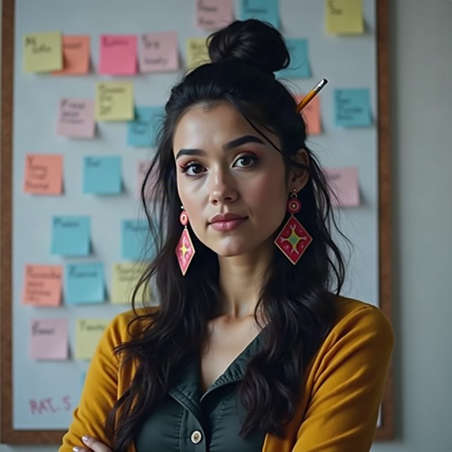

Karen — the chair's face
gavel · HackBarna AI Summit 26 · avatar candidates for
packages/chair-video
Decided. Vitaly picked candidate chair-03. She is
Karen. Everything downstream — lip-sync, the idle loop, the stage
video — uses that one file.
Two personas share the face and differ in behaviour:
formal Karen (precise, a little passive-aggressive, states time and
agenda facts) and funky Karen (funny, warm, enjoyable). Switch with
CHAIR_PERSONA=formal|funky.
Formal Karen

karen-formalpicked
avatars/karen-formal.png · was chair-03
fal-ai/flux/schnell, 1024×1024. Front-facing, direct eye contact, neutral background, mouth unobstructed — the three things the lip-sync model needs.
Funky Karen — candidates
Batch 2 — the regeneration worked. Strength raised and the funky
elements moved ahead of the identity clause, so the wardrobe and the background now
actually change. Batch 1 (three near-identical black blazers) is gone from this page;
the failure is recorded in avatars/PROMPTS.md.
Your pick. helm's read is below each card — 01 is the only one that clears every gate. Say the number and the service points at it.
karen-funky-01clears everything
floral blazer · orange striped tee · tortoiseshell glasses
Same woman as formal Karen, unmistakably a different character. Front-facing, mouth fully visible and unobstructed, plain background, no text. Reads at four metres. The one to use unless you want something louder.
karen-funky-02render defect
sequinned jacket · magenta rim light
A red laser streak crosses the eyebrow and hair — a generation artifact, not styling, and it sits right where the lip-sync model warps the face. Also a three-quarter turn rather than front-facing.

karen-funky-03different person
mustard cardigan · pencil in bun · sticky-note wall
Best styling of the three and the wrong face — different bone structure, not Karen. The sticky-note wall also carries written text, which the checklist rules out.
What a funky Karen has to clear
- A stranger sees two different characters, at four metres, on a projector.
- Still recognisably the same woman — same face, same hair.
- Mouth fully visible and unobstructed: that is what gets animated.
- Front-facing, direct eye contact, head and shoulders.
- No text, watermark or logo.